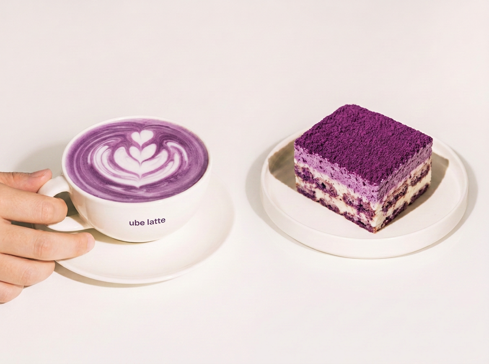

Nosotros: una cafetería temática japonesa
Yume Moon Café nació en 2023 con la idea de crear una cafetería diferente, inspirada en la cultura y la repostería japonesa. Desde el principio quisimos ofrecer algo más que un café tradicional. Por eso, incorporamos dulces japoneses, bebidas especiales y una ambientación que combina tonos lilas, detalles delicados y un espacio pensado para disfrutar con tranquilidad. Uno de nuestros principales objetivos es que las personas puedan conocer nuevos sabores. En nuestro menú incluimos preparaciones como el mochi, el dango y el taiyaki, además de bebidas como el matcha latte, el taro latte y distintos tipos de té japonés. También nos importa que cada persona que nos visite se sienta cómoda. Queremos que Yume Moon sea un lugar donde puedas compartir momentos con amigos, estudiar, conversar o simplemente tomarte un descanso.Seguimos buscando nuevas ideas para ofrecer una experiencia que combine lo mejor de una cafetería con la inspiración de la cultura japonesa..

rodeada de dulces, bebidas y muchos detalles lilas.